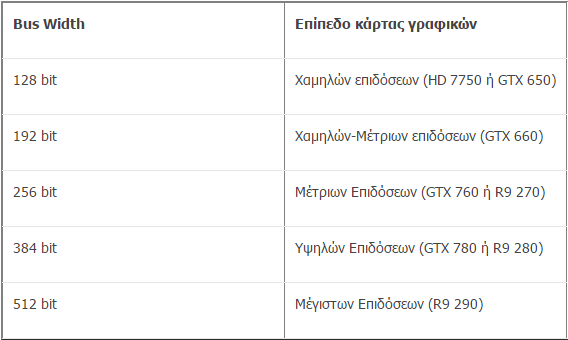

Τι είναι η κάρτα γραφικών - graphics processing unit (GPU):
Η κάρτα γραφικών είναι τμήμα ενός υπολογιστή, το οποίο λαμβάνει δεδομένα από την Κεντρική Μονάδα Επεξεργασίας (CPU) για να τα μετατρέψει σε εικόνα, η οποία θα προβληθεί στην οθόνη.
Τι διαθέτη μια κάρτα γραφικών:
Η κάρτα γραφικών είναι μια πλακέτα κυκλωμάτων, η οποία περιλαμβάνει έναν επεξεργαστή ( ή και περισσότερους )και κυκλώματα μνήμης RAM. Διαθέτει επίσης ένα μικροκύκλωμα (chip) εισόδου / εξόδου (BIOS), το οποίο αποθηκεύει τις ρυθμίσεις της κάρτας και εκτελεί διαγνωστικά για τη μνήμη, την είσοδο και την έξοδο κατά την εκκίνηση του συστήματος.
Ιστορική Αναδρομή:
Το 1997, η αξία και οι επιδόσεις μιας κάρτας γραφικών φαίνονταν με την πρώτη ματιά από το τσιπάκι που ενσωμάτωνε:
Αν είχε το S3 ViRGE, ήταν για τα σκουπίδια (πασιέντζα στα Windows και πολύ της ήταν, και κόλλαγε όταν κέρδιζες κι άρχισαν
να πέφτουν τα φύλλα).
Αν είχε το Matrox Millennium, ήταν για γραφίστες και σχεδιαστές, αλλά όχι για όποιον παίζει παιχνίδια.
Αν είχε το Nvidia Riva 128, ήταν κορυφαία για παιχνίδια.
Αν είχε το ATI Rage Pro ήταν ελαφρώς λιγότερο κορυφαία.
Τέλος, αν είχε το 3Dfx Voodoo, τότε ο ιδιοκτήτης της είχε λεφτά για πέταμα, γιατί μόνο συγκεκριμένα παιχνίδια που υποστήριζαν το Glide API εκμεταλλεύονταν τις δυνατότητες αυτού του chipset, και το Glide ουσιαστικά πέθανε μαζί με τη 3Dfx.
Εύρος ζώνης μνήμης (Memory Bandwidth):
Το memory bandwidth είναι ίσο με το γινόμενο του memory bus width (πλάτος διαύλου μνήμης) επί την χρονισμένη ταχύτητα της μνήμης. Μεγάλο memory bandwidth, σημαίνει αυτόματα και καλύτερη ανταπόκριση τις κάρτας στον χειρισμό ογκωδών texture, μεγαλύτερων αναλύσεων, εξομάλυνση γωνιών (Αnti-Αliasing), ανισοτροπικό φιλτράρισμα(Anisotropic Filtering) αλλά και σχεδόν σε οποιαδήποτε επεξεργασία γραφικών, πολύπλοκη ή μη.
Αποδοτικότητα:
Το μέγεθος και η ταχύτητα της μνήμης δεν παίζουν ιδιαίτερο ρόλο στο bandwidth, διότι μόνο η τιμή του δίνει γρήγορα μια πρώτη
εικόνα για την δύναμη της κάρτας γραφικών. Σκεφτείτε ένα σουπερμάρκετ με ανοιχτά μόνο δυο ταμεία και δυο μεγάλες ουρές, εάν
διπλασιάζαμε τον αριθμό των ταμείων (όπως θα διπλασιάζαμε το bandwidth) στον ίδιο χρόνο θα διπλασιαζόταν ο αριθμός των
πελατών που εξυπηρετούμε και ταυτόχρονα θα ελαττωθεί το μέγεθος των ουρών, εάν συνεχίζαμε και βάζαμε άλλα τέσσερα ταμεία
(πλέον θα είχαμε τετραπλασιάσει το bandwidth) κατά πάσα πιθανότητα θα εξαλειφθούν οι ουρές οπότε δεν θα υπάρχει καθυστέρηση
στην εξυπηρέτηση των πελατών (οι οποίοι παριστάνουν τα δεδομένα που επεξεργάζονται). Έτσι πρέπει να αντεπεξέρχεται η μνήμη
του GPU, και ειδικότερα σε καταστάσεις υψηλού φόρτου, διότι όσο μεγάλο μέγεθος και αν έχει, εάν δεν προλαβαίνει να την
διαβάσει, πρακτικά είναι άχρηστη.
Βandwidth:
Το μέγιστο memory bandwidth της κάρτας γραφικών προκύπτει από τον πολλαπλασιασμό του memory clock με το memory bus width και τον ρυθμό μεταφοράς του τύπου μνήμης (GDDR).
Πλάτος διαύλου μνήμης (Memory Bus Width):
Το bus width αυτή την περίοδο εκτείνεται από 32 bit έως 512 bit. Η τιμή του μας δείχνει το μέγεθος δεδομένων που μπορεί να μεταφέρει σε κάθε clock cycle (κύκλο ρολογιού). Μεγαλύτερο bus width σημαίνει και μεγαλύτερο “άνοιγμα” για την διέλευση δεδομένων, οπότε και μαζικότερη προσπέλασή τους. Γενικότερες κατηγορίες και ενδεικτικά μοντέλα:

Ρολόι Μνήμης (Memory Clock):
To memory clock, δηλαδή η ταχύτητα της μνήμης γραφικών, μαζί με το memory bus width, μας δίνουν το memory bandwidth.
Effective clock: είναι η συχνότητα προσπέλασης των δεδομένων της μνήμης.
Για μνήμες τύπου DDR - effective clock = memory clock x 2 (ομοίως για GDDR3*,GDDR4)
Για μνήμες τύπου DDR2 - effective clock = (memory clock x 2) x2
Για μνήμες τύπου GDDR5 - effective clock = (memory clock x 2) x2
* Όπου G συμβολίζει Graphics
Γενικότερα για την ευκολία αναγνώρισης των χαρακτηριστικών μιας κάρτας με μνήμη GDDR5 (όπου χρησιμοποιούν πλέον οι περισσότερες σύγχρονες)
Εάν η συχνότητα κυμαίνεται μεταξύ 1000Mhz και 1750MΗz τότε έχουμε το memory clock όπως έχει.
Εάν η συχνότητα κυμαίνεται μεταξύ 2000Mhz και 3500MHz τότε έχουμε το memory clock επί 2 (λόγω DDR) για να βρούμε το effective clock διπλασιάζουμε αυτήν την τιμή.
Εάν η συχνότητα ξεπερνάει συχνότητες της τάξεως των 4000ΜHz τότε έχουμε το effective clock. To GDDR5 χαρακτηρίζεται quad-pumped δηλαδή σε ένα clock cycle περνάνε 4 bits αντί του DDR που περνάνε 2 (dual-pumped).
Ρολόι Πυρήνα (Core Clock):
Η συχνότητα που τρέχει ο GPU (Graphics Processing Unit – Μονάδα Επεξεργασίας Γραφικών). Υψηλότερες συχνότητες προσφέρουν και ταχύτερους υπολογισμούς.
Fill Rate:
Pixel Fill Rate: Είναι ο συνολικός αριθμός των pixel που μπορεί να αποδώσει η κάρτα γραφικών στην οθόνη κάθε δευτερόλεπτο. Το clock μαζί με τα ROPs μας δίνουν το Pixel Fill Rate.
Texture Fill Rate: Είναι ο συνολικός αριθμός των textured pixels (texels) που μπορεί να αποδώσει η κάρτα γραφικών στην οθόνη κάθε δευτερόλεπτο. Για την δημιουργία 3D Σκηνών χρειάζεται τα texture να σχεδιαστούν πάνω στα πλέγματα των πολυγώνων. Αυτό το ονομάζουμε και texture mapping, το οποίο γίνεται με την βοήθεια των TMUs (texture mapping units) To υπολογίζουμε πολλαπλασιάζοντας το Core Clock επί τα texture units.
Raster Operations Pipelines (ROPs):
Τα ROPs μεταφέρουν δεδομένα-pixel στην τοπική μνήμη και το buffer (ενδιάμεση μνήμη).
Επεξεργάζονται δεδομένα όπως ΑΑ, συμπίεση χρωμάτων και τελικά τα γράφουν στο buffer της εξόδου.
Η ταχύτητα που γίνεται αυτό είναι το Fill Rate.
Πλέον όμως, αν και είναι σημαντικά, οι επιδόσεις τους δεν έχουν κάποιον ιδιαίτερο αντίκτυπο.
Texture Mapping Unit (TMU):
Τα TMUs ή αλλιώς texture units αποτελούν ένα παράρτημα των GPU το οποίο μπορεί να ρυθμίζει το σχήμα ενός bitmap και να το τοποθετεί σε ένα αυθαίρετο σημείο ενός 3D αντικειμένου ως texture. Η δουλειά τους είναι η ανάλυση μιας σκηνής σε γεωμετρικά σχήματα, ώστε να τοποθετήσουν texture πάνω σε αυτά (texels) τα οποία θα είναι έτοιμα για προβολή στην οθόνη.
Τύπος Μνήμης (Memory Type):
DDR είναι η συντομογραφία για Double Data Rate (Διπλή Ταχύτητα Δεδομένων).
Τα τσιπάκια μνήμης λειτουργούν σε συγκεκριμένα clock cycles. Οι SDR (Single Data Rate – Μονή Ταχύτητα Δεδομένων) μπορούν να προσπελάσουν μια τιμή ανά clock. Οπότε 1 MHz SDR έχει μέγιστη προσπέλαση δεδομένων με ρυθμό ενός εκατομμυρίου προσπελάσεων ανά δευτερόλεπτο.
Όποτε μία μνήμη DDR έχει μέγιστο ρυθμό προσπελάσεων δύό εκατομμύρια ανά δευτερόλεπτο. Άρα η DDR2 και GDDR5 έχουν τετραπλάσιο ρυθμό προσπέλασης αφού είναι quad-pumped.
Πίνακας Σύγκρισης DDR:
Shaders
Vertex Processors (Vertex Shader Units):
Οι συγκεκριμένοι επεξεργαστές έχουν σχεδιαστεί για να επηρεάζουν shader που ασχολούνται μόνο με κορυφές, το οποίο σημαίνει πιο περίπλοκα και πολυάριθμα 3D αντικείμενα για κάθε σκηνή.
Ωστόσο δεν επηρεάζουν ιδιαίτερα την ολική επίδοση.
Pixel Processors (Pixel Shader Units):
Οτιδήποτε περίπλοκα εφέ και γραφικά απεικονίζονται στην οθόνη έχουν δημιουργηθεί από αυτά τα shaders.
Συμφέρει μεγαλύτερος αριθμός pixel shader αντί για core clock διότι μικρή άνοδος στα shaders ισοδυναμεί με μεγάλη άνοδο στην ταχύτητα υπολογισμού, αντίθετα με το core clock.
Geometry Shaders:
Είναι υπεύθυνοι για την τροποποίηση των γραφικών με σκοπό να γίνουν ανάγλυφα και με καθορισμένο βάθος, ώστε να δείχνουν πιο ρεαλιστικά,
την ρύθμιση της εστίασης των αντικείμενων και πολλά εξειδικευμένα γραφικά όπως tessellation, real-time render και ambient occlusion.
3D API (Διεπαφή προγραμματισμού εφαρμογών):
Αυτά που χρησιμοποιούνται είναι το DirectX και το OpenGL.
Πιο διαδεδομένο όμως και αποδοτικό είναι το DirectX, και συγκεκριμένα αυτήν την περίοδο η τελευταία έκδοση του
DirectX 11 η όποια προσφέρει καλύτερη ποιότητα γραφικών από τους προκάτοχους του και με λιγότερες απαιτήσεις.
Το RAMDAC δεν κάνει τίποτα παραπάνω από το να μετατρέπει ψηφιακό σε αναλογικό σήμα.
Σύμφωνα με αυτό βρίσκεις την μέγιστη συχνότητα λειτουργίας της κάρτας γραφικών.
Αλλά με την επικράτηση του ψηφιακού σήματος το RAMDAC πλέον θεωρείται δεδομένο.
Διεπαφή Διαύλου (Bus Interface):
Βασικό χαρακτηριστικό του είναι η συμβατότητα της κάρτας γραφικών με την μητρική. Όμως παίζει μεγάλο ρόλο και στην απόδοση, διότι μεγαλύτερο και πιο σύγχρονο interface αυξάνει το περιθώριο μεταφοράς δεδομένων. Ο αριθμός στο “x” συμβολίζει τον αριθμό των διαθέσιμων lanes (πιο απλά αυτό που περιορίζει το memory bandwidth) το x4 έχει 4 lanes, το x8 έχει 8 lanes κ.ο.κ
PCI Express 1.0/1.1:
Αν και πλέον ξεπερασμένη γενιά. Ένα απλό PCIe 1.0 x1 lane έχει δυνατότητα μεταφοράς 2,5 Gigatransfers per second (GT/s).
PCI Express 2.0/2.1:
Το PCIe 2.0 επικρατεί ακόμα και τώρα ενώ νεότερες γενιές όπως 2.1 και 3.0 είναι backwards-compatible. Ένα απλό PCIe 2.0 x1 lane έχει δυνατότητα μεταφοράς μέχρι και 5 GT/s.
PCI Express 3.0/3.1:
Το PCIe 3.0 φανερά πιο αναβαθμισμένο και ποιο γρήγορο με δυνατότητα μεταφοράς στο ένα lane του μέχρι και 8 GT/s, έκανε την άφιξη του το 2011, και σταδιακά άλλα αργά θα αντικαταστήσει το PCIe 2.0. Έχει βελτιωμένο σύστημα κωδικοποίησης το οποίο μείωσε στο 1.54% από το 20% της απώλεια απόδοσής του PCIe.
PCI Express 4.0:
To PCIe 4.0 αναμένεται τέλη 2015 ενώ ανακοινώθηκε η ταχύτητα μεταφοράς σε ένα lane της τάξεως των 16 GT/s.
*Τα GT/s εκφράζονταν σε μεταφορές ανά δευτερόλεπτο αντί για bits/δευτερόλεπτο, διότι περιέχουν και τα δυαδικά ψηφία τα οποία δεν προσφέρουν επιπλέον απόδοση. Προτού το PCIe 3.0 ίσχυε Gbits/s= 0.8 x GT/s, ενώ μετά Gbits/s= 0.9846 x GT/s
Ρυθμός Μεταφοράς Δεδομένων PCI Express:
Ένα λάθος που συνηθίζεται είναι η σύγκριση graphics memory bandwidth με το PCIe bandwidth.
Είναι σαν να συγκρίνεις μήλα με πορτοκάλια, το memory bandwidth έχει να κάνει με την ταχύτητα μνήμης στην κάρτα γραφικών ενώ το PCIe με την
ταχύτητα επικοινωνίας με την μητρική. Στην πράξη PCIe 2.0 x16 μπορεί να σηκώσει HD 7990 ή GTX Titan Z (δύο τέρατα με bandwidth πάνω από 0,5 TB/s)
χωρίς απώλεια επιδόσεων. Αυτό που θα μπορούσε να εμποδίζει την λειτουργία στις μέγιστες επιδόσεις τις είναι ο CPU ή και σε ορισμένες περιπτώσεις οι μνήμες.
Cuda cores/Stream processors:
Αποτελούν ένα σύμπλεγμα μικροεπεξεργαστών, (προγραμματισμένοι σε γλώσσα CUDA για αυτούς τι Nvidia) που βρίσκεται μέσα στην κάρτα.
Χρησιμοποιούνται για διάφορες υπολογιστικές διαδικασίες όπως render, πολυάριθμους ταυτόχρονους υπολογισμούς και ανάθεση συγκεκριμένων διεργασιών.
Τα CUDA cores και Stream Processors προκύπτουν από τον αριθμό των Cores, επί τις μονάδες SIMDs (Single instruction, multiple data), επί το άθροισμα των mul-add
(των αριθμητικών και λογικών μονάδων (ALU – Arithmetic Logic Unit) που μπορούν να κάνουν σε ένα clock cycle πρόσθεση και πολλαπλασιασμό ταυτόχρονα) και mul (πολλαπλασιασμού),
επί το Core Clock.
Συνδεσμολογία:
VGA (Video Graphics Array):
Μεταφέρει αναλογικό σήμα από την κάρτα κατευθείαν στην έξοδο.
DVI (Digital Visual Interface):
Μεταφέρει ασυμπίεστα ψηφιακά δεδομένα στην έξοδο, Χωρίζεται σε DVI-D (μόνο ψηφιακού), DVI-A (μόνο αναλογικό) DVI- I (ψηφιακό και αναλογικό).
Περιορίζεται σε ανάλυση 1920×1080 @ 60 Hz,για μεγαλύτερες χρησιμοποιήσετε Dual Link DVI
HDMI:
Μεταφέρει ασυμπίεστα ψηφιακά δεδομένα και συμπιεσμένο ή ασυμπίεστο ήχο.
Το HDMI 2.0 υποστηρίζει αναλύσεις μέχρι και 4096x2160*60fps
Displayport:
Μεταφέρει εικόνα, ήχο και άλλες μορφές δεδομένων, Αποτελεί μια ταχύτατη και αξιόπιστη συνδεσιμότητα αφού η έκδοση
1.3 υποστηρίζει ταχύτητες της τάξεως των 32 Gbit/s και 8Κ αναλύσεις, ή και 4Κ 3D streams από ένα μόνο καλώδιο.
Σημαντικό χαρακτηριστικό:
Σημαντικό χαρακτηριστικό, επίσης, σε μια κάρτα γραφικών είναι και ο ρυθμός ανανέωσης πλαισίων (frame rate).
Η αρχή λειτουργίας κινούμενων γραφικών στον υπολογιστή είναι η ίδια με αυτήν του κινηματογράφου: Προβάλλονται στην οθόνη 24 διαδοχικές εικόνες (frames, πλαίσια) ανά δευτερόλεπτο,
προκειμένου η κινούμενη εικόνα να εμφανίζει σωστή ροή, χωρίς διακοπές, στο θεατή. Ο ρυθμός αυτός εξαρτάται τόσο από τον επεξεργαστή και τη μνήμη RAM που διαθέτει η κάρτα όσο και
από ειδικό λογισμικό, που συνήθως ενσωματώνεται σε αυτήν.
Aνάλυση της χρήσης των δεδομένων:
Εκτός από την επεξεργαστική της ισχύ, η GPU χρησιμοποιεί ειδικό προγραμματισμό για καλύτερη ανάλυση της χρήσης των δεδομένων.
Οι εταιρείες AMD και nVidia παράγουν τη συντριπτική πλειοψηφία των GPU για την παγκόσμια αγορά. Και οι δύο εταιρείες έχουν αναπτύξει τις δικές τους καινοτομίες και
βελτιώσεις για τις επιδόσεις των GPU. Για να βελτιωθεί η ποιότητα της εικόνας, χρησιμοποιούνται οι εξής τεχνικές:
Anti aliasing πλήρους οθόνης (FSAA), που απαλύνει τις άκρες του τρισδιάστατου αντικειμένου.
Ανισότροπο φιλτράρισμα (AF), το οποίο καθιστά τις εικόνες ευκρινέστερες.
Κάθε εταιρεία έχει επίσης αναπτύξει ειδικές τεχνικές για να βοηθήσει την GPU για την απόδοση καλύτερων χρωμάτων, σκίασης, υφής και άλλων στοιχείων της εικόνας.
Επεξεργαστής γραφικών:
Ο επεξεργαστής γραφικών της κάρτας, που ονομάζεται μονάδα επεξεργασίας γραφικών (Graphics Processing Unit, GPU), είναι παρόμοιος με τον επεξεργαστή ενός υπολογιστή.
Μια GPU, ωστόσο, έχει σχεδιαστεί ειδικά για την εκτέλεση των πολύπλοκων μαθηματικών και γεωμετρικών υπολογισμών που είναι απαραίτητοι για την απόδοση γραφικών.
Μερικές από τις ταχύτερες GPUs διαθέτουν περισσότερα τρανζίστορ από το μέσο όρο της CPU.
Μια GPU παράγει πολλή θερμότητα, έτσι ώστε να είναι απαραίτητη η χρήση ενός ανεμιστήρα (μερικές κάρτες γραφικών διαθέτουν και σύστημα υδρόψυξης).
Η εξέλιξη των καρτών γραφικών:
Οι κάρτες γραφικών εμφανίζονται για πρώτη φορά στον πρώτο "προσωπικό υπολογιστή" IBM PC το 1981. Ονομαζόταν Μονόχρωμος Προσαρμογέας Γραφικών (Monochrome Display Adapter, MDA) και ήταν ένα κύκλωμα (κάρτα) που προέβαλε μόνο κείμενο σε πράσινο ή λευκό χρώμα μαύρο υπόβαθρο. Ακολούθησαν οι κάρτες CGA (Color Graphics Adaptor) με δυνατότητα απεικόνισης οκτώ χρωμάτων (συχνά όχι ταυτόχρονα) και EGA (Enhanced Graphics Adaptor) με δυνατότητες απεικόνισης 64 χρωμάτων. Στους σημερινούς υπολογιστές το ελάχιστο πρότυπο για τις νέες κάρτες βίντεο είναι το Video Graphics Array (VGA), το οποίο επιτρέπει 256 χρώματα και την εμφάνιση εικόνων. Με υψηλά πρότυπα απόδοσης όπως ο Quantum Extended Graphics Array (QXGA),οι κάρτες βίντεο μπορεί να εμφανίσουν εκατομμύρια χρώματα σε ανάλυση έως και 2040 x 1536 pixel.
Καθώς η GPU δημιουργεί συνέχεια "εικόνες", πρέπει κάπου να αποθηκεύει τις ήδη ολοκληρωμένες "εικόνες". Χρησιμοποιεί για το σκοπό αυτό τη μνήμη RAM της κάρτας, την αποθήκευση δεδομένων για κάθε εικονοστοιχείο (pixel), το χρώμα του και τη θέση του στην οθόνη. Τμήμα της μνήμης RAM μπορεί επίσης να δράσει ως ρυθμιστικό πλαίσιο: Αυτό σημαίνει ότι θα έχει ολοκληρώσει τις "εικόνες" και θα είναι η στιγμή να τις εμφανίσει στην οθόνη. Συνήθως, η βίντεο RAM λειτουργεί σε πολύ υψηλές ταχύτητες και έχει διπλό δίαυλο, πράγμα που σημαίνει ότι το σύστημα μπορεί να διαβάσει και να γράψει σε αυτήν την ίδια στιγμή.
Η μνήμη RAM συνδέεται άμεσα με το μετατροπέα σήματος ψηφιακό-σε-αναλογικό (DAC). Αυτός ο μετατροπέας, που ονομάζεται επίσης RAMDAC, μεταφράζει την εικόνα σε αναλογικό σήμα, καθώς η σημερινή οθόνη δεν μπορεί ακόμη να χρησιμοποιήσει ψηφιακό σήμα. Ορισμένες κάρτες έχουν πολλαπλές RAMDACs, που μπορούν να βελτιώσουν τις επιδόσεις και να υποστηρίξουν περισσότερες από μία οθόνες και τελικά στέλνουν την τελική εικόνα για την προβολή στην οθόνη μέσω καλωδίου DVI, VGA ή HDMI. Οι περισσότερες σύγχρονες κάρτες γραφικών είναι πάνω από 2 GB για υψηλότερες επιδόσεις (ειδικά στο όρο που χρησιμοποιούμε ως "GAMING")
Συστήματα απαγωγής θερμότητας:
Οι κάρτες γραφικών μπορούν να χρησιμοποιήσουν σημαντική ποσότητα ηλεκτρικής ενέργειας, μέρος της οποίας χάνεται σε θερμότητα. Εάν αυτή η θερμότητα δεν απάγεται, ο επεξεργαστής γραφικών της κάρτας μπορεί να υπερθερμανθεί και να προκληθεί βλάβη. Γι αυτό το λόγο, οι κατασκευαστές τοποθετούν πάντοτε κάποιο σύστημα απαγωγής της θερμότητας:
1.Παθητική απαγωγή (ψύκτρα): Πάνω στον επεξεργαστή γραφικών τοποθετείται απλή ψύκτρα από αλουμίνιο ή χαλκό. Το πλεονέκτημά της είναι η αθόρυβη λειτουργία. Στις πιο ισχυρές κάρτες, όμως, δεν παρέχει επαρκή απαγωγή θερμότητας.
2.Ψύκτρα και βεβιασμένη ροή αέρα (ανεμιστήρας). Η ταχύτητα περιστροφής του ανεμιστήρα μπορεί να αλλάζει (πχ να ελέγχεται αυτόματα από τον επεξεργαστή γραφικών ή τη μητρική κάρτα) για πιο αποτελεσματική ή πιο ήσυχη λειτουργία.
3.Ψύκτρα και υδρόψυξη: Το σύστημα υδρόψυξης χρησιμοποιεί νερό αντί για αέρα, ως μέσο απομάκρυνσης της θερμότητας από την ψύκτρα προς το περιβάλλον. το νερό κυκλοφορεί μέσα στην ψύκτρα και, με εξωτερικές σωληνώσεις, μεταφέρει την εκλυόμενη θερμότητα σε εναλλάκτη θερμότητας (ψυγείο) με ανεμιστήρα, μακριά από τον επεξεργαστή γραφικών ή ακόμη και έξω από το περίβλημα του υπολογιστή.